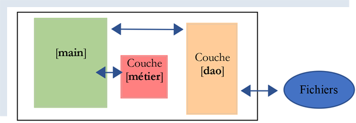
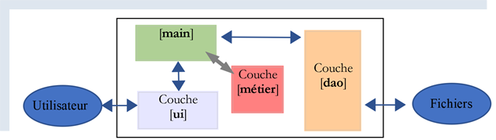
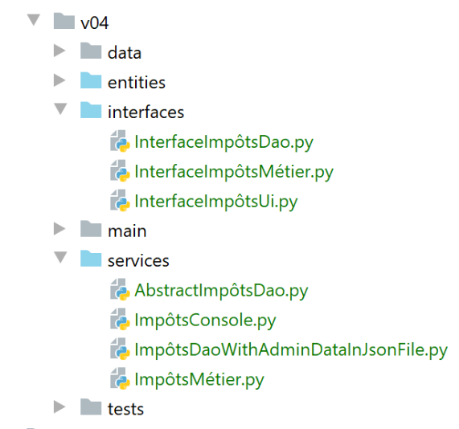
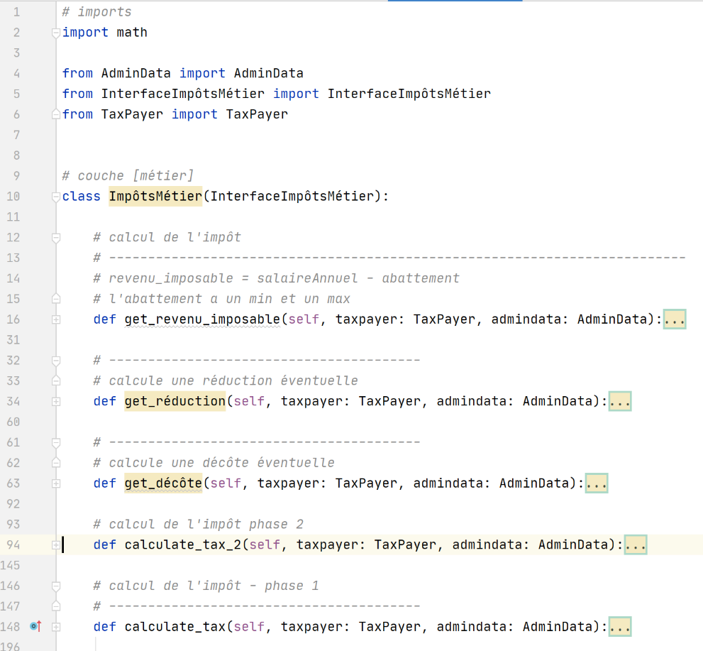
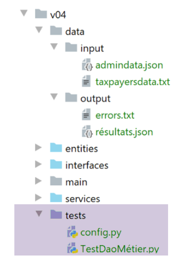
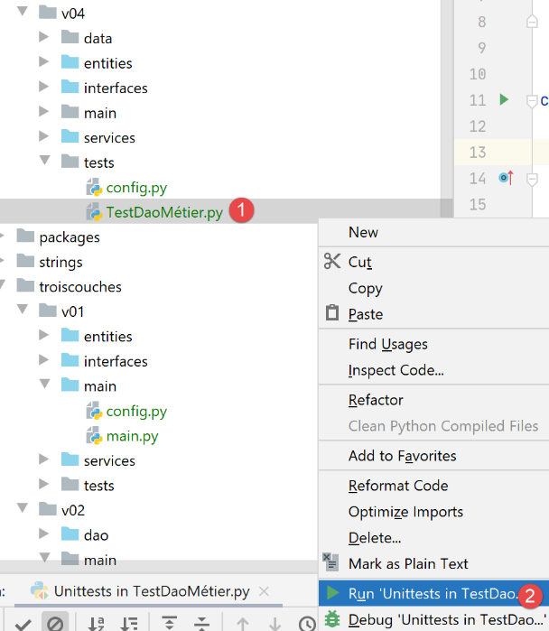
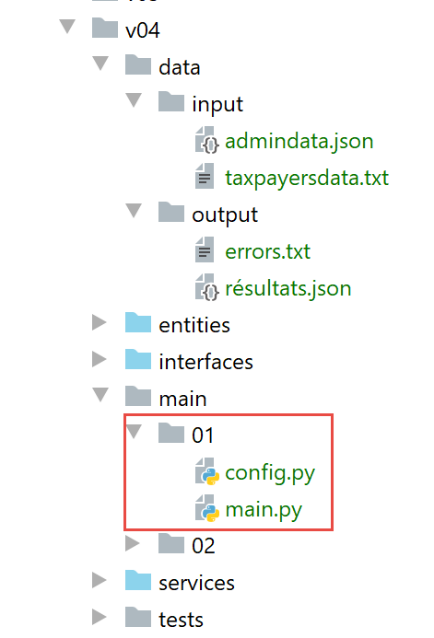
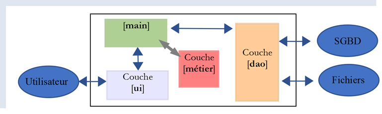
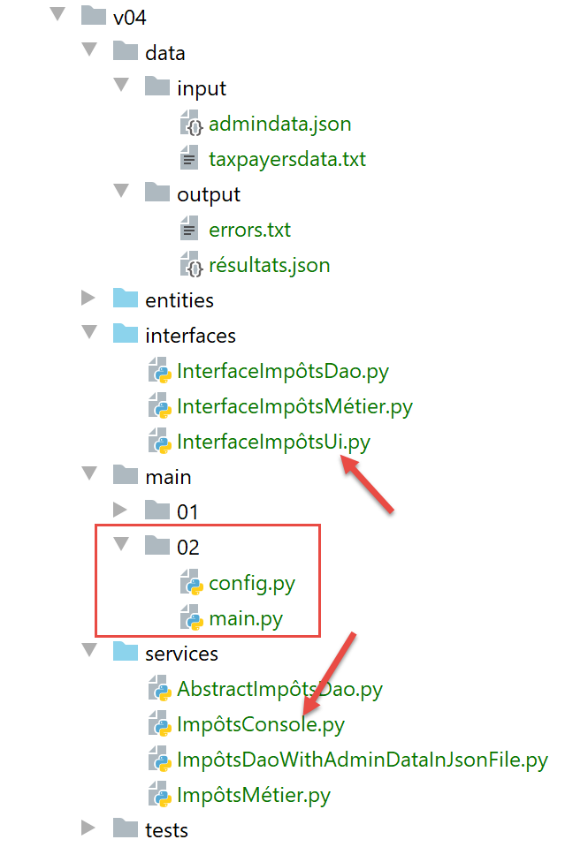

15. Exercice d'application - version 4
Nous reprenons ici l'exercice décrit au paragraphe |Version 3| et nous le traitons maintenant avec des classes et interfaces. Nous écrirons deux applications :
L’application 1 sera la suivante :

Un script principal [main] instanciera une couche [dao] et une couche [métier] :
- la couche [dao] aura pour rôle de gérer des données stockées dans des fichiers texte et ultérieurement dans une base de données ;
- la couche [métier] aura pour rôle de faire le calcul de l'impôt ; Dans cette application, il n'y aura pas d'actions de la part d'un utilisateur : les données des contribuables seront trouvées dans un fichier texte dont on donnera le nom au module [main].
Dans l’application 2, c'est l'utilisateur qui tapera au clavier les données des contribuables. L'architecture évoluera alors de la façon suivante :

- la couche [dao] (Data Access Object) s'occupe de l'accès aux données externes
- la couche [métier] s'occupe des problèmes métier, ici le calcul de l'impôt. Elle ne s'occupe pas des données. Celles-ci peuvent avoir deux provenances :
- la couche [dao] pour les données persistantes ;
- la couche [ui] pour les données fournies par l'utilisateur.
- la couche [ui] (User Interface) s'occupe des interactions avec l'utilisateur ;
- [main] est le chef d'orchestre ; Dans la suite, les couches [dao], [métier] et [ui] seront chacune implémentée à l'aide d'une classe. Les couches [métier] et [dao] seront les mêmes pour les deux applications. C’est la raison pour laquelle on les a réunies dans une même version de l’exercice d’application.
15.1. Version 4 – application 1
La version 4 calcule l'impôt d'une liste de contribuables placée dans un fichier texte. Elle a l'architecture suivante :

15.1.1. Les entités
Les entités sont des classes de données. Leur rôle est d’encapsuler des données et d’offrir des getters / setters qui permettent de vérifier la validité de celles-ci. Les entités sont échangées par les couches. Une même entité peut partir de la couche [ui] pour aller jusqu’à la couche [dao] et vice-versa.

15.1.1.1. La classe [ImpôtsError]
Nous utiliserons une classe d'exception propriétaire :
Dès que les couches [métier] et [dao] rencontreront un problème, elles lanceront cette exception. Elle dérive de la classe [MyException]. Elle s’utilise donc de la façon suivante : [raise ImpôtsError(code_erreur, msg_erreur)].
15.1.1.2. La classe [AdminData]
La classe [AdminData] encapsule les constantes intervenant dans le calcul de l’impôt :
- ligne 5 : la classe [AdminData] étend la classe [BaseEntity] décrite au paragraphe |BaseEntity|. On se rappelle que les classes étendant la classe [BaseEntity] doivent définir :
- un attribut de classe [excluded_keys] (ligne 7) qui liste les propriétés de l’objet exclues lorsque l’objet est transformé en dictionnaire ;
- une méthode statique [get_allowed_keys] (lignes 10-26) qui rend la liste des propriétés acceptées lorsque l’objet est initialisé avec un dictionnaire ; On n’a pas utilisé de setters pour vérifier la validité des données utilisées pour initialiser un objet [AdminData]. En effet, cet objet est unique et défini par configuration et donc pas susceptible d’être erroné.
15.1.1.3. La classe [TaxPayer]
La classe [TaxPayer] modèlisera un contribuable :
1 2 3 4 5 6 7 8 9 10 11 12 13 14 15 16 17 18 19 20 21 22 23 24 25 26 27 28 29 30 31 32 33 34 35 36 37 38 39 40 41 42 43 44 45 46 47 48 49 50 51 52 53 54 55 56 57 58 59 60 61 62 63 64 65 66 67 68 69 70 71 72 73 74 75 76 77 78 79 80 81 82 83 84 85 86 87 88 89 90 91 92 93 94 95 96 97 98 99 100 101 102 103 104 105 106 107 108 109 110 111 112 113 114 115 116 117 118 119 120 121 122 123 124 125 126 127 128 129 130 131 132 133 134 135 136 137 138 139 140 141 142 143 144 145 146 147 148 149 150 151 152 153 154 155 156 157 158 159 160 161 | |
Notes :
- la classe [TaxPayer] encapsule un contribuable ;
- ligne 7 : la classe [TaxPayer] dérive de la classe [BaseEntity]. Elle a donc un identifiant [id] ;
- ligne 20 : aucune propriété n’est exclue de l’état d’un objet [AdminData] ;
- lignes 22-25 : les propriétés de la classe. Celles-ci sont explicitées aux lignes 9-17 ;
- lignes 27-58 : getters des attributs de la classe ;
- lignes 60-161 : les setters des attributs de la classe. On rappelle que l’intérêt d’une classe encapsulant des données vis-à-vis d’un simple dictionnaire est que la classe peut vérifier la validité de ses propriétés grâce à ses setters ;
15.1.2. La couche [dao]
Nous allons réunir les implémentations des couches dans un dossier [services]. Ces classes implémenteront des interfaces définies dans le dossier [interfaces].

15.1.2.1. L'interface [InterfaceImpôtsDao]
La couche [dao] implémentera l'interface [InterfaceImpôtsDao] suivante (fichier InterfaceImpôtsDao.py) :
L'interface définit trois méthodes :
- [get_admindata] : est la méthode qui obtient le tableau des tranches d'impôt. On notera qu'on ne donne aucun renseignement sur la façon d'obtenir ces données. Dans la suite, elles seront trouvées d'abord dans un fichier texte puis dans une base de données. Ce seront aux classes qui implémentent l'interface de s'adapter au mode de stockage des données. On aura donc une classe pour récupérer les tranches d'impôt dans un fichier texte et une autre pour les récupérer dans une base de données. Elles implémenteront toutes deux la méthode [get_admindata] ;
- [get_taxpayers_data] : est la méthode qui obtient les données des contribuables. Là encore nous ne disons pas où elles seront trouvées. Nous ne traiterons que le cas où elles sont dans un fichier texte ;
- [write_taxpayers_results] : est la méthode qui va persister les résultats du calcul de l'impôt. Nous ne disons pas où. Nous ne traiterons que le cas où les résultats sont persistés dans un fichier texte. Le paramètre [taxpayers_results] sera la liste des résultats à persister ;
15.1.2.2. La classe [AbstractImpôtsDao]
La couche [dao] va être implémentée par deux classes :
- l'une ira chercher les données (contribuables, résultats, tranches d'impôt) dans des fichiers texte ;
-
l'autre ira chercher les données (contribuables, résultats) dans des fichiers texte et les tranches de l'impôt dans une base de données ; Les deux classes ne vont différer que par la gestion des tranches de l'impôt. Les données contribuables et les résultats des calculs de l'impôt seront, elles, gérées de la même façon. Pour cette raison, nous allons les gérer dans une classe parent [AbstractImpôtsDao]. La particularité de la gestion des tranches d'impôt sera, elle, gérée dans deux classes filles :
-
la classe [ImpôtsDaoWithAdminDataInJsonFile] ira chercher les tranches de l'impôt dans un fichier texte au format jSON ;
- la classe [ImpôtsDaoWithAdminDataInDatabase] ira chercher les tranches de l'impôt dans une base de données ; La classe parent [AbstractImpôtsDao] sera la suivante :
- ligne 13 : la classe [AbstractImpôtsDao] implémente l'interface [InterfaceImpôtsDao]. Aussi trouve-t-on les trois méthodes de cette interface :
- [get_taxpayers_data] : ligne 31 ;
- [write_taxpayers_results] : ligne 35 ;
- [get_admindata] : ligne 40. Cette méthode ne sera pas implémentée par la classe [AbstractImpôtsDao] aussi est-elle déclarée abstraite (ligne 39) ;
- ligne 16 : le constructeur reçoit un dictionnaire [config] contenant les informations suivantes :
- [taxpayersFilename] : le nom du fichier texte qui contient les données des contribuables ;
- [resultsFilename] : le nom du fichier texte dans lequel seront mis les résultats ;
- [errorsFilename] : le nom du fichier texte listant les erreurs rencontrées lors de l’exploitation du fichier [taxpayersFilename] ; La méthode [get_taxpayers_data] est la suivante :
- ligne 4 : les données des contribuables (marié, enfants, salaire) seront placées dans une liste d'objets de type [TaxPayer] ;
- lignes 8-9 : on ouvre le fichier texte des contribuables en lecture. Son contenu a la forme suivante :
Par rapport aux versions précédentes :
- chaque ligne du fichier [taxpayersFilename] commence par l'identifiant du contribuable, un simple numéro ;
- les commentaires et les lignes vides sont autorisés ;
-
on va gérer les erreurs. Ainsi les lignes 17, 19 et 21 doivent être déclarées erronées. Les erreurs sont consignées dans un fichier à part ; Continuons l’examen du code :
-
ligne 4 : les données du fichier texte sont transférées dans la liste [taxPayersData] ;
- lignes 14-31 : le fichier des contribuables est lu ligne par ligne ;
- ligne 14 : la fin du fichier est atteinte lorsqu’on lit une ligne vide (rien – pas même la marque de fin de ligne \r\n) ;
- ligne 20 : on ignore les lignes vides et les commentaires. Une ligne est un commentaire si, une fois la ligne débarrassée de ses blancs devant et derrière le texte, le 1er caractère est le caractère # ;
- ligne 24 : une ligne correcte est composée de quatre champs séparés par une virgule. On récupère ceux-ci. L’affectation de données à un tuple de quatre éléments échoue s’il n’y a pas exactement quatre données affectées ;
- ligne 25 : si l’un des quatre champs récupérés [id, marié, enfants, salaire] est invalide alors la méthode [BaseEntity.fromdict] lancera une exception de type [MyException] ;
- lignes 25-26 : un objet [TaxPayer] est ajouté à la liste [taxpayers_data] des contribuables ;
- lignes 27-29 : les éventuelles erreurs sont cumulées dans une liste [erreurs]. Cette liste a été créée ligne 6 ;
- lignes 33-36 : la liste des erreurs rencontrées est enregistrée dans le fichier texte [errorsFilename]. Elles sont de deux types :
- une ligne n’avait pas le nombre correct de champs attendus ;
- les informations de la ligne étaient erronées et ont échoué à construire un objet [TaxPayer] ;
- lignes 39-41 : on intercepte toute erreur (BaseException) et on la remonte en l'encapsulant dans un type [ImpôtsError] ;
- lignes 42-45 : dans tous les cas, réussite ou échec, le fichier texte des contrbuables est fermé s'il a été ouvert ; La méthode [write_taxpayers_results] doit produire un fichier jSON de la forme :
La méthode [write_taxpayers_results] est la suivante :
- ligne 2 : la méthode reçoit une liste de contribuables [taxpayers] qu'elle doit enregistrer dans le fichier texte [self.taxpayers_results_filename] au format jSON ;
- ligne 10 : création du fichier UTF-8 des résultats ;
- ligne 12 : nous introduisons ici la fonction [map] dont la syntaxe ici est [map (fonction, liste1)]. La fonction [fonction] est appliquée à chaque élément de [liste1] et produit un nouvel élément qui alimente une liste [liste2]. Finalement, pour chaque i :
Ici, [liste1] est la liste [taxPayers], une liste d'objets de type [TaxPayer]. La fonction [fonction] est exprimée ici sous la forme d'une fonction dite [lambda] qui exprime la transformation faite sur un élément [taxpayer] de la liste [taxpayers] : chaque élément [taxpayer] est remplacé par son dictionnaire [taxpayer.asdict()]. Finalement, la liste [liste2] obtenue est la liste des dictionnaires des éléments de la liste [taxpayers] ;
- ligne 12 : le résultat rendu par la fonction [map] n'est pas la liste [liste2] mais un objet de type [map]. Pour avoir [liste2], il faut utiliser l'expression [list(mapping)] (ligne 14) ;
- ligne 14 : la liste [liste2] est enregistrée au format jSON dans le fichier [self.taxpayers_results_filename] ;
- lignes 15-17 : tout type d'exception est intercepté et encapsulé dans une erreur de type [ImpôtsError] avant d'être relancé (ligne 17) ;
- lignes 19-21 : dans tous les cas, réussite ou échec, le fichier des résultats est fermé s'il a été ouvert ;
15.1.2.3. Classe [ImpôtsDaoWithAdminDataInJsonFile]
La classe [ImpôtsDaoWithAdminDataInJsonFile] va dériver de la classe [AbstractImpôtsDao] et implémenter la méthode [getAdminData] que sa classe parent n'a pas implémentée. Elle ira chercher les données de l'administration fiscale dans un fichier jSON :
La classe [ImpôtsDaoWithAdminDataInJsonFile] est la suivante :
- ligne 11 : la classe [ImpôtsDaoWithAdminDataInJsonFile] hérite de la classe [AbstractImpôtsDao]. A ce titre elle implémente l'interface [InterfaceImpôtsDao] ;
- ligne 13 : le constructeur reçoit en paramètre un dictionnaire contenant les informations des lignes 14-17 ;
- ligne 20 : la classe parent est initialisée ;
- ligne 24 : ouverture du fichier jSON des données de l'administration fiscale ;
- ligne 25 : le fichier UTF-8 des données de l’administration fiscale est ouvert ;
- ligne 27 : le contenu du fichier est lu et placé dans l’objet [self.admindata] de type [AdminData]. Il faut que les clés du fichier jSON correspondent aux propriétés acceptées pour un objet [AdminData] sinon la méthode [fromdict] lancera une exception ;
- lignes 28-30 : gestion des exceptions. Les exceptions qui peuvent se produire sont encapsulées dans un type [ImpôtsError] avant d'être relancées ;
- lignes 32-34 : le fichier est fermé s'il a été ouvert ;
- lignes 42-43 : implémentation de la méthode [get_admindata] de l'interface [InterfaceImpôtsDao] ;
15.1.3. La couche [métier]
15.1.3.1. L'interface [InterfaceImpôtsMétier]
L'interface de la couche [métier] sera la suivante :
- l'interface [InterfaceImpôtsMétier] définit une unique méthode :
- ligne 12 : la méthode [calculate_tax] permet de calculer l'impôt d'un unique contribuable [taxpayer]. [admindata] est l’objet [AdminData] encapsulant les données de l'administration fiscale ;
- ligne 12 : la méthode [calculate_tax] ne rend pas de résultat. Les données obtenues (impôt, surcôte, décôte, réduction, taux) sont incluses dans le paramètre [taxpayer] : avant l'appel ces attributs sont vides, après l'appel ils ont été initialisés ;
15.1.3.2. La classe [ImpôtsMétier]
La classe [ImpôtsMétier] implémente l'interface [InterfaceImpôtsMétier] de la façon suivante :

Les méthodes de la classe sont issues du module [impôts_module_02] du paragraphe |Le module [impots.v02.modules.impôts_module_02]|. On a seulement limité les paramètres des méthodes à deux :
- taxpayer(id, marié, enfants, salaire, impôt, décôte, surcôte, réduction, taux) : l'objet représentant un contribuable et son impôt ;
- admindata : l’objet encapsulant les données de l'administration fiscale ; Nous montrons sur une méthode les changements ainsi apportés ;
- ligne 3: la méthode [calculate_tax] est l'unique méthode de l'interface [InterfaceImpôtsMétier]. Elle admet deux paramètres :
- [tapPayer] : le contribuable dont on calcule l'impôt ;
- [admindata] : l’objet encapsulant les données de l'administration fiscale ;
- les résultats du calcul sont encapsulés dans le paramètre [taxpayer] (lignes 40-50). Le contenu de cet objet n'est donc pas le même avant et après l'appel à la méthode ;
15.1.4. Tests des couches [dao] et [métier]

- [TestDaoMétier] est la classe UnitTest de test des couches [dao] et [métier] ;
- [config] est le fichier de configuration des tests ; La configuration [config] est la suivante :
- lignes 4-23 : on configure le Python Path des tests ;
- lignes 32-41 : on instancie les couches [dao] et [métier]. On met leurs références dans le dictionnaire [config] ;
- ligne 44 : on rend ce dictionnaire ; La classe de test [TestDaoMétier] est la suivante :
1 2 3 4 5 6 7 8 9 10 11 12 13 14 15 16 17 18 19 20 21 22 23 24 25 26 27 28 29 30 31 32 33 34 35 36 37 38 39 40 41 42 43 44 45 46 47 48 49 50 51 52 53 54 55 56 57 58 59 60 61 62 63 64 65 66 67 68 69 70 71 72 73 74 75 76 77 78 79 80 81 82 83 84 85 86 87 88 89 90 91 92 93 94 95 96 97 98 99 100 101 102 103 104 105 106 107 108 109 110 111 112 113 114 115 116 117 118 119 120 121 122 123 124 125 126 127 128 129 130 131 132 133 134 135 136 137 138 139 140 141 142 143 144 145 146 147 148 149 150 151 152 153 154 155 156 157 158 159 160 161 162 163 164 165 166 167 168 169 170 171 172 173 174 175 176 177 | |
Commentaires
- ligne 11 : la classe de test étend la classe [unittest.TestCase] ;
- lignes 13-19 : dans un test UnitTest, la méthode [setUp] est exécutée avant chacune des méthodes [test_] ;
- ligne 16 : on récupère la configuration issue du script [config] étudié précédemment ;
- ligne 18 : on mémorise une référence sur la couche [métier] ;
- ligne 19 : on demande à la couche [dao] l’objet [AdminData] encapsulant les données de l’administration fiscale et on le mémorise ;
- lignes 21-173 : 11 tests dont les résultats ont été vérifiés sur le site officiel des impôts 2019 |https://www3.impots.gouv.fr/simulateur/calcul_impot/2019/simplifie/index.htm| ;
- lignes 21-33 : tous les tests ont été construits sur le même modèle ;
- ligne 22 : on importe la classe [TaxPayer] ;
- ligne 24 : contribuable testé ;
- ligne 25 : résultats attendus ;
- ligne 26 : construction de l’objet [TaxPayer] du contribuable ;
- ligne 27 : calcul de son impôt. Le résultat est dans [taxpayer] ;
- lignes 29-33 : vérification des résultats obtenus ;
- ligne 29 : on vérifie le montant de l’impôt à l’euro près. Les tests ont en effet montré que les résultats obtenus par l’algorithme de ce document pouvaient différer des chiffres officiels au plus d’un montant de 1 euro ; L’exécution des tests donne les résultats suivants :

15.1.5. Script principal

Le script principal est configuré par le script [config] suivant :
Il est analogue à celui utilisé pour le test des couches [métier] et [dao].
Le script principal [main.py] est le suivant :
Notes
- lignes 2-4 : on récupère la configuration de l’application. On sait également que le Python Path de l’application a été construit ;
- lignes 9-11 : on récupère des références sur les couches [métier] et [dao] ;
- ligne 15 : on obtient les données de l'administration fiscale ;
- ligne 17 : on obtient la liste des contribuables dont il faut calculer l'impôt ;
- lignes 19-20 : si cette liste est vide, on lève une exception ;
- lignes 22-25 : calcul de l'impôt des différents objets [taxpayer] grâce à la couche [métier] ;
- ligne 27 : [taxpayers] est désormais une liste d'objets [TaxPayer] où les attributs (impôt, décôte, surcôte, réduction, taux) ont reçu une valeur. Cette liste est écrite dans un fichier jSON ;
- lignes 28-30 : interception d'une éventuelle erreur ;
- lignes 31-33 : exécutées dans tous les cas ; L’exécution du script donne les mêmes résultats que dans les versions précédentes. Le fichier des erreurs de contribuables était une nouveauté dans cette version. Après exécution du script [main] son contenu est le suivant :
Les lignes erronées étaient les suivantes :
15.2. Version 4 – application 2
Dans cette version, c'est l'utilisateur au clavier qui donne la liste des contribuables. L'architecture de l'application sera la suivante :

Un nouveau module apparaît : la couche [ui] (User Interface) qui va dialoguer avec l'utilisateur. Cette couche aura une interface et sera implémentée par une classe.

15.2.1. L'interface [InterfaceImpôtsUi]
L'interface [InterfaceImpôtsUi] n'aura qu'une méthode, celle des lignes 8-10. L'interface sera ici implémentée avec une application console mais on pourrait aussi l'implémenter avec une interface graphique. Les paramètres passés à la méthode [run] ne seraient pas les mêmes dans les deux implémentations. Pour contourner ce problème, la méthode habituelle est de :
- ne pas mettre de paramètres à la méthode [run] (ou le minimum de paramètres) ;
- passer des paramètres au constructeur de la classe implémentant l'interface. Ils peuvent être différents d'une implémentation à l'autre. Ces paramètres sont enregistrés comme attributs de la classe ;
- faire en sorte que la méthode [run] utilise ces attributs de classe (self.x) ; Cette méthode permet d'avoir une interface très générale qui est précisée par les paramètres des constructeurs de chaque classe d'implémentation. Cette méthode a déjà été utilisée pour la version modulaire n° 1.
15.2.2. La classe [ImpôtsConsole]
La classe [ImpôtsConsole] implémente l'interface [InterfaceImpôtsUi] de la façon suivante :
- ligne 9 : la classe [ImpôtsConsole] implémente l'interface [InterfaceImpôtsUi] ;
- ligne 11 : le constructeur de la classe reçoit un paramètre, le dictionnaire [config] de la configuration de l’application ;
- ligne 13 : on récupère les données de l’administration fiscale permettant le calcul de l’impôt ;
- ligne 14 : on mémorise une référence sur la couche [métier] ;
- ligne 16 : implémentation de la méthode [run] de l'interface ;
- lignes 19-53 : dialogue avec l'utilisateur. Il consiste
- à demander les trois informations (marié, enfants, salaire) du contribuable ;
- à calculer son impôt ;
- à afficher celui-ci ;
- le dialogue se termine lorsque l'utilisateur répond * à la première question ;
- lignes 20-27 : on demande si le contribuable est marié et on vérifie la validité de la réponse ;
- lignes 29-31 : si l’utilisateur a répondu ‘*’ à la question le dialogue est arrêté ;
- lignes 32-39 : on demande le nombre d'enfants du contribuable et on vérifie la validité de la réponse ;
- lignes 40-47 : on demande le salaire annuel du contribuable et on vérifie la validité de la réponse ;
- lignes 48-50 : avec ces informations on fait calculer, par la couche [métier], l'impôt du contribuable ;
- ligne 52 : le montant de l'impôt est affiché ;
15.2.3. Le script principal
Le script principal [main] est configuré par le fichier [config] suivant :
Le script chef d'orchestre est le suivant (main.py) :
- lignes 1-4 : on récupère la configuration de l’application ;
- ligne 10 : on récupère une référence sur la couche [ui] ;
- lignes 12-21 : la structure du code est la même que dans l’application précédente : du code entouré d'un try / catch pour arrêter toute éventuelle exception ;
- ligne 15 : on demande à la couche [ui] de s'exécuter : le dialogue avec l'utilisateur commence alors ;
- lignes 16-18 : interception d'une éventuelle exception ; Voici un exemple d'exécution :